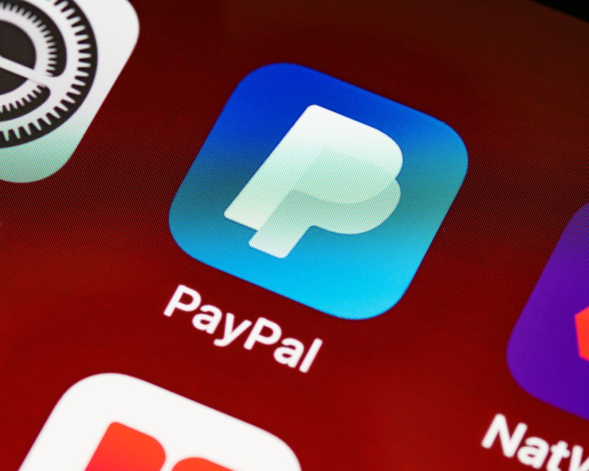
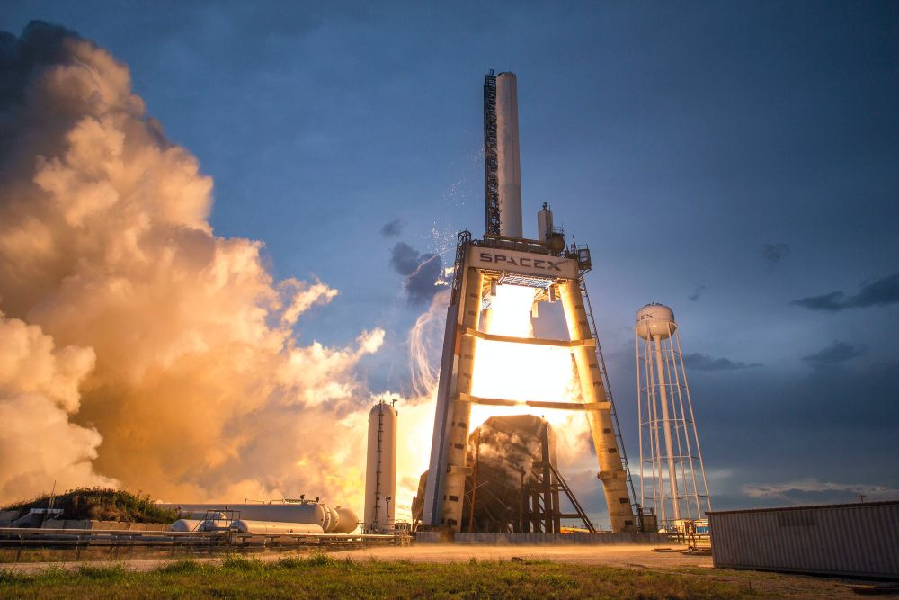
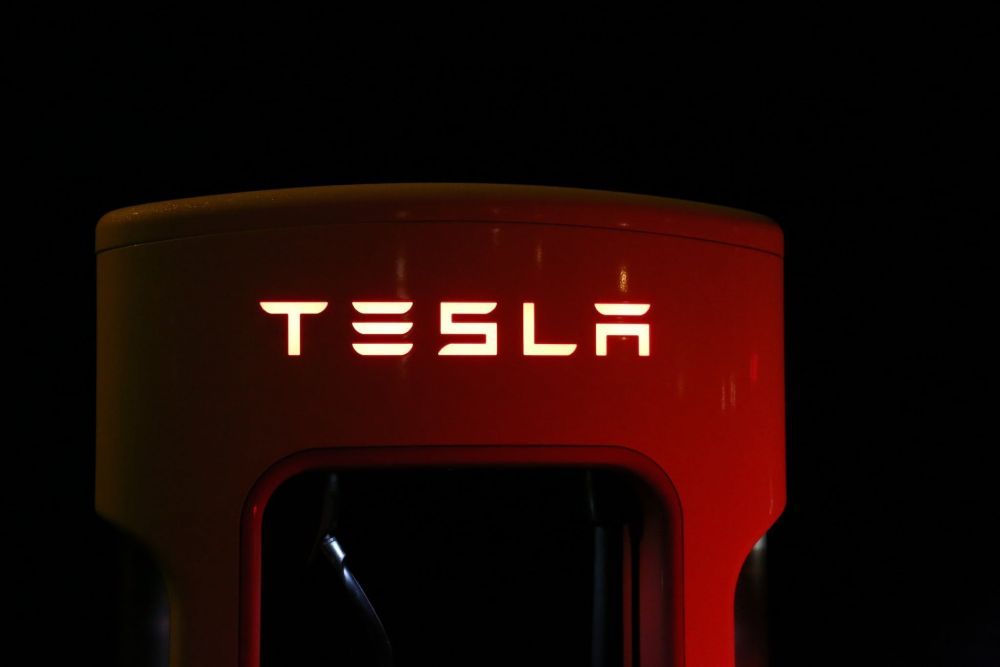
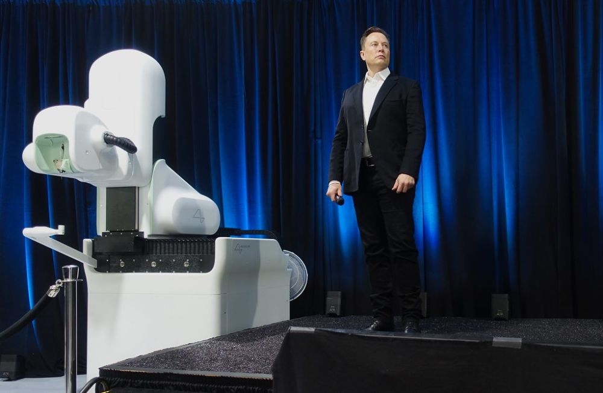
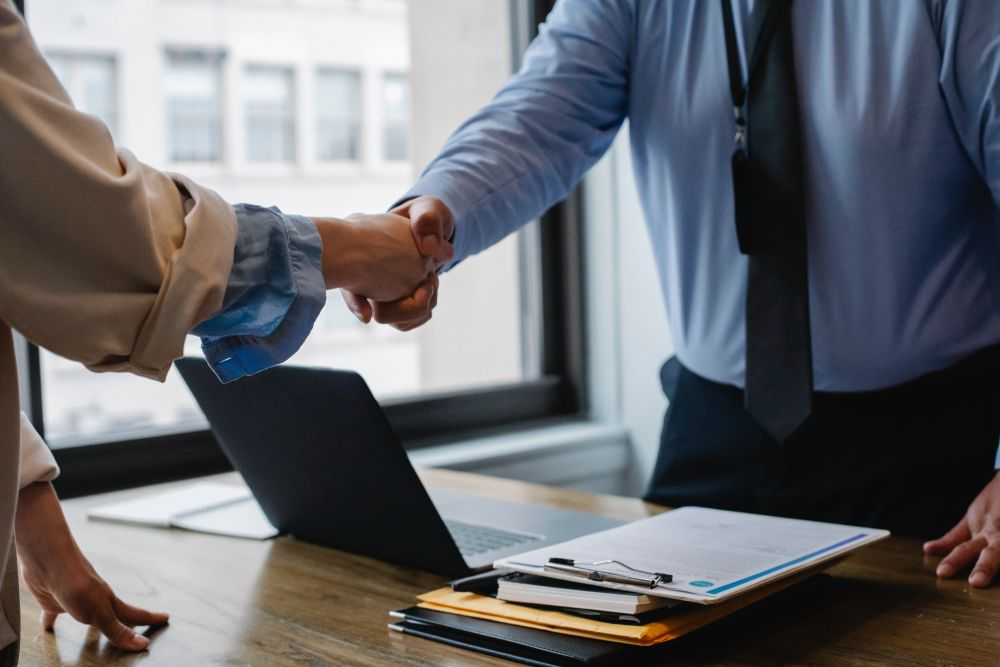
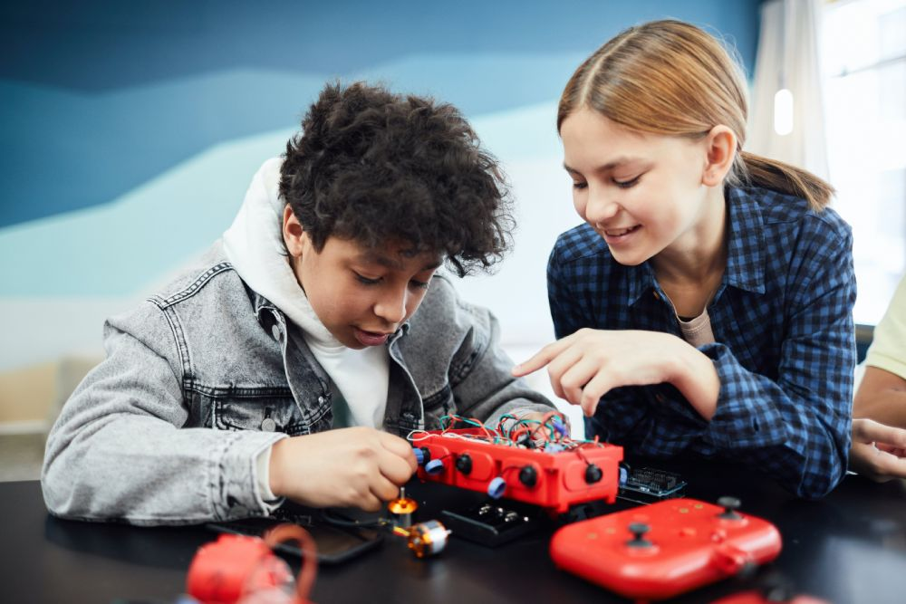

PayPal
Elon Musk quickly moved gears to his next venture after striking it rich with the Compaq sale. He co-founded and initially headed what was then known
as X.com in 1999. The venture received significant funding from notable Silicon Valley tech venture investors. Musk's initial, lofty aim was to
offer a wide variety of financial services through the internet, including bank accounts, insurance, mortgages, mutual funds, and other assets.
Back then, internet banking was an undeveloped and difficult business to get into. Sceptics questioned Musk's ability to develop X.com into a viable
online financial institution equivalent to a digital Western Union, given his lack banking history, save for a brief undergraduate stint.
....

In response to this challenge, Musk told Hamilton Spectator's Mark Gimein, he said, his ability to develop a competitive Internet corporation
with a solid base is regarded to be his talent and competence. When Zip2 was launched, he was completely inexperienced with the media sector,
but he learned as he went. It has been noticed that being an outsider creates a more innovative attitude to finding methods to improve the way
things are done. When tactics have been used for years, it is normal for people to stop questioning them, even if they violate logic.
Musk combined X.com with a new online financial business, PayPal, in March 2000, which allowed online payments between individuals. PayPal,
like X.com, was rapidly gaining new consumers. PayPal grew into both business-to-consumer and business-to-business areas following the merger.
Users with X.com accounts were given the ability to utilize deposited money to make payments to individuals and companies rapidly using PayPal.
Notably, one of the firms that used PayPal's services was eBay, the auction website. Within months, X.com had 2.5 million user visits in June, and
by the end of October, 2000 it had 300,000 accounts, evidencing the concept's popularity.
However, conflicts emerged between Musk and Bill Harris, the CEO and president of X.com after only six months. Musk announced X.com's business
change in October 2000, focusing only on processing payments between parties. Soon after, he announced the renaming of the firm as PayPal.
Significant attention was paid to increasing business-to-consumer and business-to-business activities, along with worldwide development.
Elon also prioritized fraud prevention and security enhancements in reaction to negative publicity around significant fraudulent transactions.
SpaceX
Elon Musk changed his emphasis to space exploration in 2002, after bringing PayPal public and selling company to eBay for $1.5 billion. He created
SpaceX with $100 million of his own money, with the goal of revolutionizing space travel by substantially lowering prices. Despite initial hiccups,
SpaceX scored a crucial milestone in 2008 when Falcon 1, a privately designed liquid-fuel rocket, successfully orbited the Earth.
....
Musk's rocket projects grew with the development of Falcon 9, which is geared for trips to the International Space Station and beyond. To save
operating and development costs, the corporation prioritized reusability. SpaceX achieved advances in rocket technology, including the successful
test flight of the Grasshopper in 2013. NASA also chose SpaceX's Dragon rocket for manned trips to the International Space Station, resuming
shuttle operations in 2014.

Elon Musk's SpaceX was one of the few companies that President Obama hoped would take over space station maintenance once the shuttle retired.
If SpaceX had been successful, it would have hushed detractors and secured a $1.6 billion contract with NASA, establishing it as the major
carrier of supplies and, eventually, humans. This would have propelled Musk to the status of a 21st-century tycoon, deriving cash from space
projects. SpaceX has outperformed competitors financed by Jeff Bezos and Paul Allen, as well as aerospace behemoths Boeing and Lockheed Martin,
with over $4 billion in contracts and more than 40 missions already booked.
Musk, on the other hand, saw his endeavors on a far grander scale. He hoped to colonize Mars, insuring humanity's existence regardless of what
happened to Earth. Musk saw this as a gigantic insurance policy for all of humanity, and he expected to achieve it within the next 20 years.
He was upbeat about the progress being made.
During a voyage to the International Space Station in 2015, a Falcon 9 rocket encountered a mid-air explosion, resulting in cargo loss.
The likely reason, according to Musk, is an over pressurized oxidizer tank. Despite this setback, SpaceX maintained its aim to make space
travel more accessible and affordable, marking a watershed moment in the future of space exploration.
Tesla Motors
The initial founders of Tesla, engineers Martin Eberhard and Marc Tarpenning, laid the groundwork for the company's 2003 incorporation. The automaker's
well-known face, Elon Musk, did not join as a founding member. Rather, he joined the scene in 2004 and contributed a significant amount of the $6.35
million of the $6.5 million first Series A capital. As a result of this investment, Eberhard became CEO of Tesla and Musk became chairman.
....
Eberhard's time in office was brief, though, as he resigned in August 2007 after a disagreement with Musk about authority. As a result, early
Tesla investor Michael Marks filled the post of acting CEO until November of the same year, at which point Ze'ev Drori, the creator of Monolithic
Memories, took over.
In 2008, Marc Tarpenning left at the same time as Tesla's first vehicle, the Roadster, went into production. Musk cemented his powerful position
inside the firm by becoming the CEO post in October of the same year.
Tesla needed assistance while it was having financial difficulties in 2009 due to the recession. They obtained a $465 million government loan and
sold 10% of the company to Daimler. In spite of the difficult circumstances, Tesla debuted a Model S prototype in the same year. CEO disputes
continued, and in June 2009 Martin Eberhard filed a lawsuit, claiming Elon Musk had driven him out and had falsified Tesla's founding history.

Unexpectedly, in September 2009, Eberhard and Musk reached an agreement wherein they would jointly hold the title of cofounder alongside Marc
Tarpenning and three other individuals. Musk is listed as the CEO and cofounder of Tesla on the company's official account. The Model S was
formally introduced for sale in 2012, and Tesla went public in 2010 at a price of $17 per share. Musk unveiled the Model X later that year,
extending Tesla's vehicle range with its unique gullwing doors.
One of the most contentious aspects of Tesla, Autopilot, which offers driving assistance, was launched by Musk in 2014. Some claim that the word
"Autopilot" may suggest a degree of vehicle autonomy that it does not. Even while utilizing Autopilot, Tesla requires its drivers to be attentive
and maintain their hands on the wheel. However, as Rick Newman of Yahoo Finance noted last year, the function has been linked to accidents,
including at least 11 deadly ones.
Neuralink
Neuralink is Musk's brain-implant company, it has recently obtained permission from an impartial review body to begin accepting patients for its human
trial for the first time. The goal of the six-year project is to test the experimental gadget on paralyzed subjects.
....
Several businesses, including Neuralink, are developing brain-computer interfaces (BCIs) that could record and decipher brain signals. However,
academics and neuroscientists are skeptical about Musk's audacious claims about creating a universal brain-computer interface and have raised
ethical questions.

The company's request for faster human studies was first denied by the Food and Drug Administration last year. On the other hand, Neuralink was
granted permission for an experimental device exemption in May, which allowed for clinical research. How the agency handled its first concerns is
a matter of public record.
Neuralink is particularly looking for people who have ALS or spinal cord injuries that have left them quadriplegic. They will have a BCI surgically
implanted in a part of the brain that controls movement, under the guidance of a patented robot. The idea is to give them the ability to use their
thoughts to control a computer cursor or keyboard. The evaluation of the technology's usability and safety is the main goal of the research.
The experiment was given regulatory permission before this news was made, but the company's previous animal research is still being investigated.
There have been rumors of trials that upset people unnecessarily, and former workers have called them hurried and vague. According to reports,
the gadget was once implanted in pigs erroneously, which resulted in the killing of the animals.
These claims have sparked a few investigations, including probes into animal welfare from the Department of Agriculture and improper handling of
biohazardous chemicals over state boundaries from the Department of Transportation.
When asked about the trial's schedule, location, or number of participants, the firm has not yet replied. Even if the gadget turns out to be safe
for human usage, it may be decades before it is approved for use outside of the study.
The Boring Company
Elon Musk, well-known for his involvement with many tech enterprises, began a new endeavor with a tweet in 2016: The Boring Company. Musk
quickly conceptualized the notion of developing a tunnel boring machine to reduce traffic congestion, fueled by dissatisfaction with traffic. He was
dead set on making this notion a reality.
....
The Boring Company's first project began in February 2017, and it resulted in the completion of three endeavors: the R&D Tunnel, the Hyperloop Test
Track, and the Las Vegas Convention Centre. The business is now concentrating on the ambitious 68-mile Vegas Loop, which would eventually connect
Las Vegas and Los Angeles.
According to recent sources, The Boring Company's worth has risen to an estimated $7 billion following a share sale by workers and investors, a
22% increase over the last investment round. Shares were valued at $24, up from $19 in the previous Series C investment round in April of the
previous year. Investors were given the option of purchasing up to $20 million in secondary shares.

The company's main selling point is its capacity to use cutting-edge technology to revolutionize tunnelling. The Prufrock machine, which is now in
use, can excavate around one mile each week, revolutionizing tunnel construction. It is believed that future versions will be considerably more
efficient.
Musk confirmed the prospect of mining over 10,000 miles of tunnel and reaching a $1 trillion valuation by 2030 in response to questions about the
company's exponential expansion. While the technology was viable, he observed that the key problem was gaining the requisite licenses, given the
rising challenges in construction projects in North America and Europe.
X- formerly Twitter
Elon Musk has formally assumed control of Twitter following a period of uncertainty, legal issues, and strenuous negotiations. The $44
billion transaction was completed. Musk started a massive restructure quickly, dismissing at least four high-ranking Twitter personnel, including the
CEO and CFO. Musk then visited San Francisco at Twitter headquarters, where he spoke with the engineering and advertising teams.
....
The transaction ends a turbulent path highlighted by Musk's shifting objectives about the purchase. This development casts doubt on Twitter's
future direction. Musk, a supporter of free speech, stressed his intention to make the platform more accessible to diverse sorts of opinion. In
addition, he expressed his determination to "reverse the permanent ban" put on former President Donald Trump.

Musk's lax speech policies on Twitter prompt worries about the platform's continuous problems with harmful content and false information, which
might influence the political dialogue worldwide. Immediate challenges will arise, particularly during critical events such as Brazil's presidential
election and the U.S. midterm elections on November 8. Twitter had previously outlined measures to prevent misleading claims about voting and election
outcomes, but this was before Musk assumed ownership.
The Musk Foundation
Elon Musk, a well-known technology entrepreneur, established the Musk Foundation in 2002. The foundation, which is situated in California,
concentrates its donations on a few specific areas of interest, all of which revolve around renewable energy, space exploration, pediatrics research,
and science and engineering education.
....
The Musk Foundation, with such a well-known name, may be an attractive potential for your grant writing. However, before devoting time and effort
to presenting a proposal to the foundation, you should first assess whether your idea is a suitable fit for their emphasis.

As you read this article, you will be assigned ratings based on certain criteria to help you assess whether your idea is a good fit for the Musk
Foundation. This will guarantee that you are concentrating your efforts. This will ensure you focusing on high-ROI opportunities.
Grants are made in support of
- Development of safe artificial intelligence to benefit humanity
- Human space exploration research and advocacy
- Renewable energy research and advocacy
- Science and engineering education
- Paediatric research